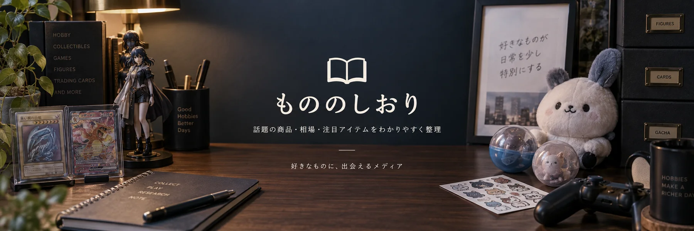

ムンクのピカチュウは展覧会とつながる一枚｜配布背景と鑑定品の見方
2018年の「ムンク展―共鳴する魂の叫び」とポケモンカードのコラボから生まれたピカチュウ。公式案内では、展覧会を鑑賞した人への配布期間が12月10日から16日に設定されていた。展覧会の開幕日から配られたカードではない。
当サイトはアフィリエイト広告を利用しています

COLLECTION & EVERYDAY FINDS
カード、キャラクターグッズ、ホビーまで。商品の背景と見どころを整理する読みものです。
2018年の「ムンク展―共鳴する魂の叫び」とポケモンカードのコラボから生まれたピカチュウ。公式案内では、展覧会を鑑賞した人への配布期間が12月10日から16日に設定されていた。展覧会の開幕日から配られたカードではない。
公式商品ページに、来来モモンガのぷちミニマスコットが掲載されている。製品番号は4582662913424で、同じモモンガの別衣装との識別に使える。
1993年発売のロックマンXは、主人公エックスとゼロが登場するアクションゲーム。従来のロックマンとXシリーズを分ける入口になる作品だ。
テラスタルフェスexはハイクラスパック。イーブイの進化形を目当てにする人も、欲しいSARがあるならBOXとシングルカードを別の選択肢として比較したい。
コジコジの作品公式サイトで、キャラクターたちを立体的なシールにしたボンボンドロップが紹介されている。絵柄を小物に貼って楽しむ商品だ。
PENTAX Q10は、公式に小型の交換レンズカメラとして紹介される機種。Qシリーズの一員でも、初代QやQ7と同じ製品ではない。
2018年の「ムンク展―共鳴する魂の叫び」とポケモンカードのコラボから生まれたピカチュウ。公式案内では、展覧会を鑑賞した人への配布期間が12月10日から16日に設定されていた。展覧会の開幕日から配られたカードではない。
ムンク展コラボのミミッキュは、2018年10月27日発売のミニカードファイル「叫びピカチュウ／イーブイ」に付属したプロモカード。公式カード情報の番号は289/SM-Pで、イラストレーターはHasuno。
マリオの姿をしたピカチュウという、二つの作品の接点を楽しむコラボカード。マリオピカチュウの名称だけで決めず、カード番号と絵柄まで指定して比べたい。
ルイージとピカチュウを組み合わせたカードは、マリオピカチュウとの対で見たくなる題材だ。同じ名前で複数の出品形態が並ぶため、写真に写るカード番号とイラストを基準にする。
ちいかわ飯店の来来シリーズには、ぷちミニマスコットとぬいぐるみSがある。同じちいかわでも、商品名のサイズ区分まで確認して選びたい。
来来ハチワレのぷちミニマスコットは、ちいかわ飯店の商品として公式に掲載されている。ハチワレの顔だけでなく、シリーズ衣装まで含めて楽しむ小物だ。
ちいかわ飯店の来来うさぎは、同シリーズのぷちミニマスコットを探す対象。ぬいぐるみSなど別サイズとの混同を避け、タグの正式商品名を確かめたい。
公式商品ページに、来来モモンガのぷちミニマスコットが掲載されている。製品番号は4582662913424で、同じモモンガの別衣装との識別に使える。
1990年発売のスーパーファミコン用アクション。マリオとルイージが恐竜ランドを冒険し、ヨッシーやマントを使う遊びが特徴だ。任天堂の公式紹介で作品の背景を確認できる。
F-ZEROは1990年発売のスーパーファミコン用レースゲーム。後のF-ZERO Xとは別の初代作品として、タイトルと対応機種を確認したい。
1991年発売のスーパーファミコン用アクションで、二人同時プレイに対応する。正式タイトルはゆき姫救出絵巻。ゴエモンの後続作品と区別して確認したい。
超魔界村は1991年発売のアクションで、魔界村シリーズ第3弾。アーサーの二段ジャンプや、変化する地形が作品の特徴として公式に紹介されている。
商品名、シリーズ名、ジャンルから気になる記事へたどれます。
記事を検索する → 記事一覧へ →